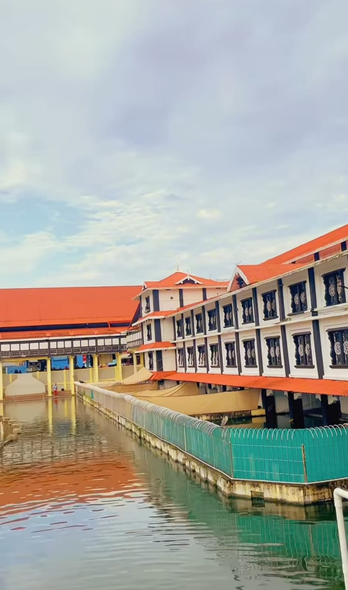

Gurupawanapuri
The Guruvayur Temple (Gurupawanapuri) a famous Indian Hindu temple located in the town of Guruvayur in Thrissur district, Kerala.
The temple is dedicated to Lord Vishnu (Guruvayurappan) but popularly known as Krishna.
It is one of the most important places of worship for Hindus in Kerala
More Info

